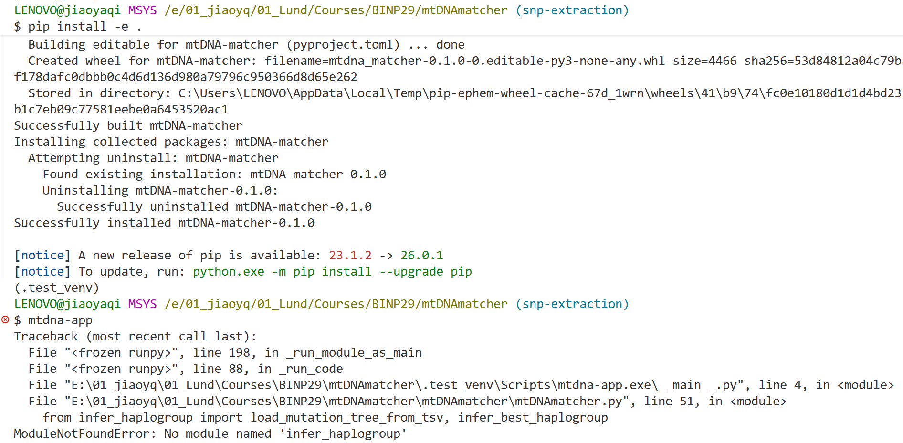
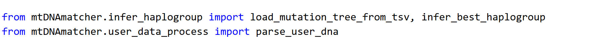
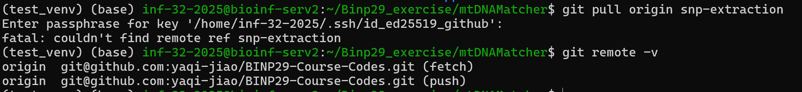
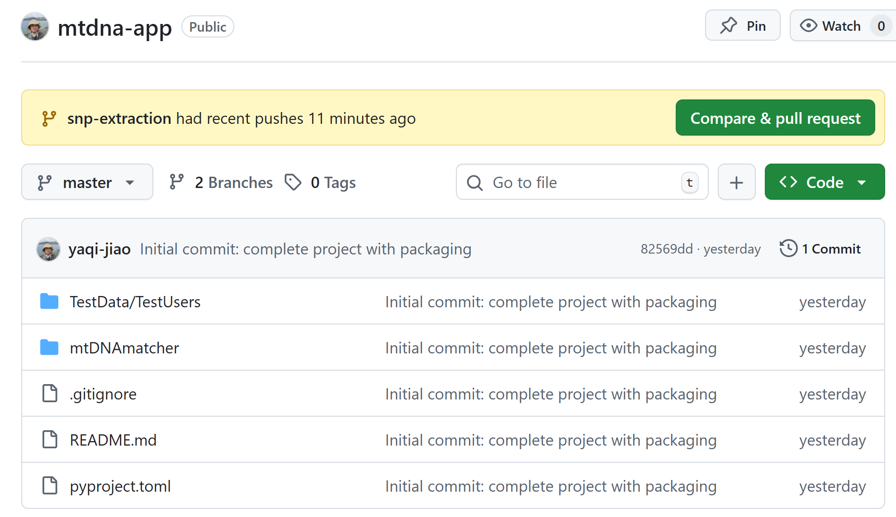
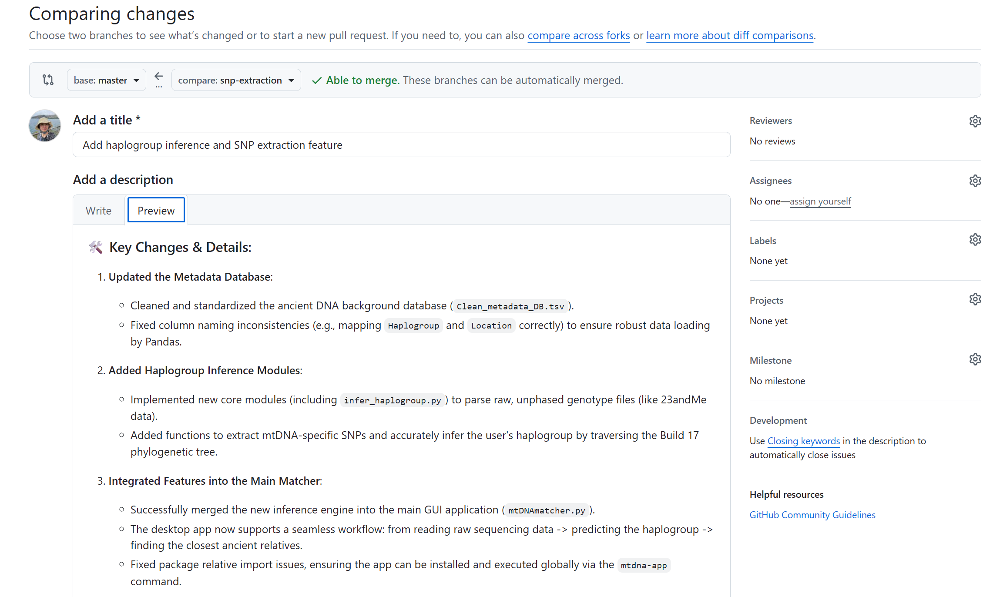
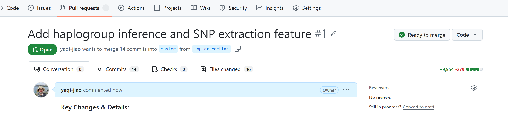
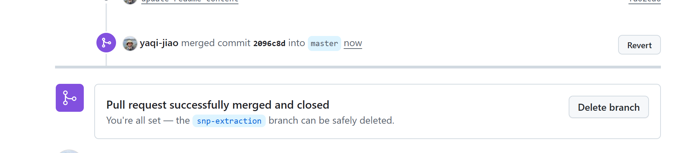
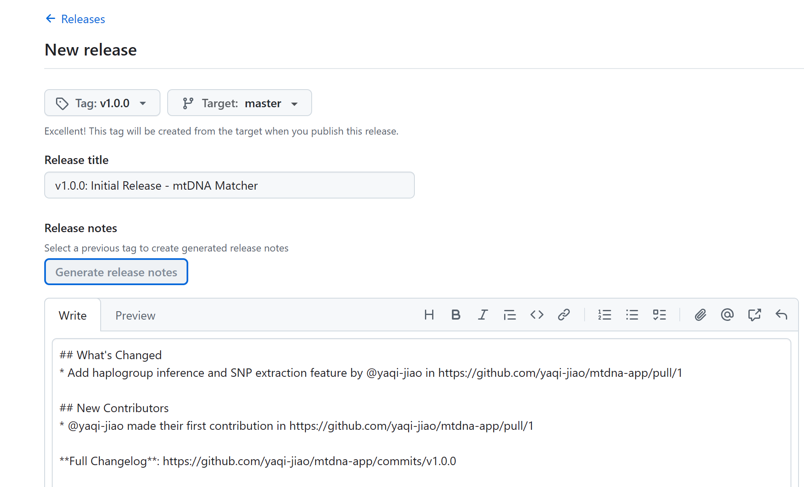
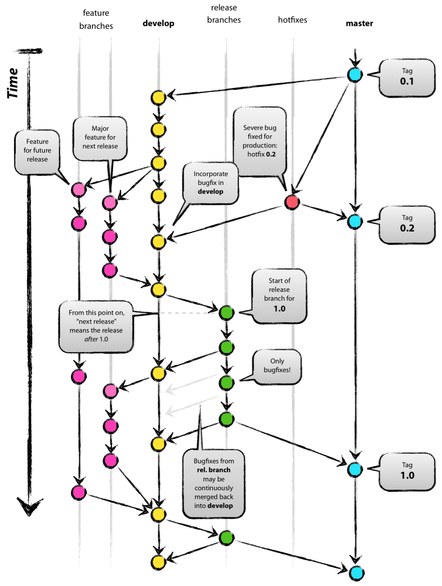

Case
You have just finished an app project that reports ancestral haplogroup information based on the user’s known haplogroup. It has been packaged, tested, and can be installed via pip install. At this point, the product manager / your supervisor / you yourself come up with a new requirement: add a feature to infer haplogroups directly from raw genotype data.
The packaged code is already sitting on the main branch. Modifying it directly there carries a high risk of breaking the existing stable version. The correct approach here is to open a new feature branch, develop within it, and merge it back to the main branch only after it is stable.
Below is the complete log of my development process for this new feature, the lessons I learned about Git branching and large-scale code management, and how several bugs were fixed along the way.
The Concept of a “Feature”
A “feature” refers to an independent functional point, such as “adding SNP extraction” or “adding CSV export”. During development, you should ensure that each feature does only one thing, uses exactly one branch, and that modifications and commits are strictly confined to that specific branch. Once the feature is fully developed and passes testing, it is then merged back into the main branch.
Core Rule: The main branch must always remain in a deployable/releasable state. New features are developed in isolated branches
Study
Modifications
1. Create and switch to a new branch:
git checkout -b snp-extraction2. Added some new scripts, modified existing code, and strived to maintain commit atomicity
related changes are grouped in the same commit, while unrelated changes are committed separately, providing clear commit -m messages.
3. Cleaning Up Unneeded Files
While developing the new feature, I realized some older files were no longer needed. However, since they were already pushed, I couldn’t simply use git reset to delete them.
I use git rm. The --cached parameter controls whether the file is kept locally:
- Some files I wanted to keep on my local machine but remove from Git tracking (`git rm --cached`).
{fig-align="center" width="\"500”"}
- Some files I wanted to delete entirely from both GitHub and my local directory (`git rm`). {fig-align="center" width="\"500”"}4. Updating Dependency Configurations
I use pyproject.toml for package management. New features might introduce new dependencies, or render old ones obsolete. After a quick check, I found I could actually remove an old dependency, so I deleted it from the dependencies list in pyproject.toml and committed the change.
5. Local pip install Testing**
- Error Record: Installing the development version locally using
pip install -e .showed a successful installation. However, running the global commandmtdna-appresulted in aModuleNotFoundError. Yet, runningpython mtDNAmatcher/mtDNAmatcher.pydirectly worked perfectly fine.

- The Cause: Because I had run
pip install -epreviously, the files were already packaged, which altered Python’s lookup path. Runningpython mtDNAmatcher/mtDNAmatcher.pyexplicitly guides Python to the current directory. But when running the packagedmtdna-appcommand, Python searches globally/from the project root, causing a path mismatch.

Push
1. Push the branch to the remote repository
after successful local installation and testing: git push origin snp-extraction
2. Clean Install Test (via Clone)
- Error Record 1: Because I used the
--cachedparameter withgit rmearlier, the unneeded old files were kept locally. During my local tests, the app was actually still running the old files, masking potential issues. - Error Record 2: My testing environment wasn’t “clean” enough. I accidentally cloned the repository inside another existing Git repository (a nested Git repo trap), causing pathing and pulling issues.

*git remote set-url origin* to switch to another one.3. Pulling the Latest Code through git pull origin snp-extraction
4. Iterative testing continued until the feature was completely stable.
Merging and Releasing
After pushing, the repository homepage on GitHub displays a prompt: “snp-extraction had recent pushes” and asks if you want to Compare & pull request.

1. Initiate a Pull Request (PR) on GitHub.
2. On the PR page to review all modifications
Github will detect conflict automatically. Add some descriptions for this merge.

3. Once confirmed, click Merge pull request.

4. Delete the feature branch after merging to keep the repo clean.

Optional: Command-line operations
git checkout main
git pull origin main
git merge snp-extraction
git push origin main5. Add release information and version
After merging, the main branch now contains the new feature. At this point, you can navigate to the repository’s homepage, click Releases -> Draft a new release, fill in the version tag (e.g., v1.0.0) and release notes, and click publish

Takeaways: Large-Scale Code Management
Git Branch Management Strategy: The standard “Git Flow” defines five main types of branches, all centered around the core concept of version releases
Feature: Used for developing new functionalities for an upcoming release. Ideally, each commit should contain an independent, complete change. Modifications should only happen in the corresponding feature branch to prevent conflicts.
Quote from official GitHub docs: “If you rename a variable and add some tests, put the variable rename in one commit and the tests in another. Later, if you want to keep the tests but revert the variable rename, you can revert the specific commit that contained the variable rename. If you put the variable rename and tests in the same commit or spread the variable rename across multiple commits, you will spend more effort reverting your changes.”
Release: A pre-release branch used to prepare for a version launch, allowing for final testing and minor bug fixes.
Hotfix: An emergency branch used to patch critical bugs in the live production version.
Develop: An integration branch used to merge multiple features together; it is tested thoroughly before being merged into main.
Master/Main: The holy grail. Code is always merged into the main branch last, ensuring it is always ready to deploy.

Reference
- Git Flow(Classic Branch Model): A successful Git branching model
- Official GitHub Flow: Official GitHub document (GitHub Flow)